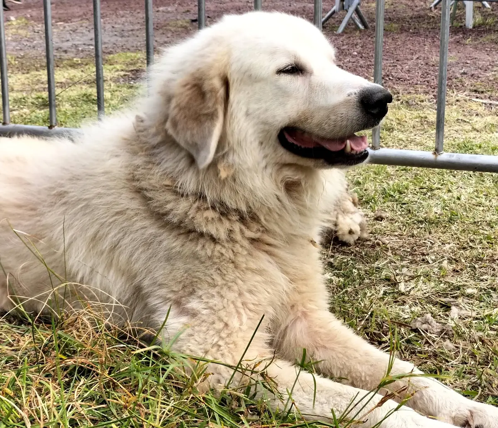
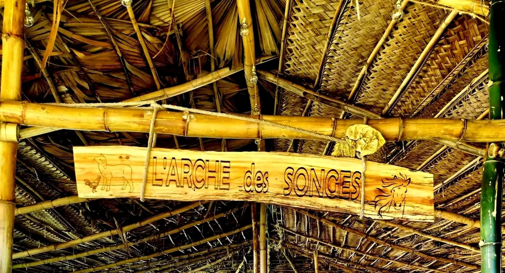
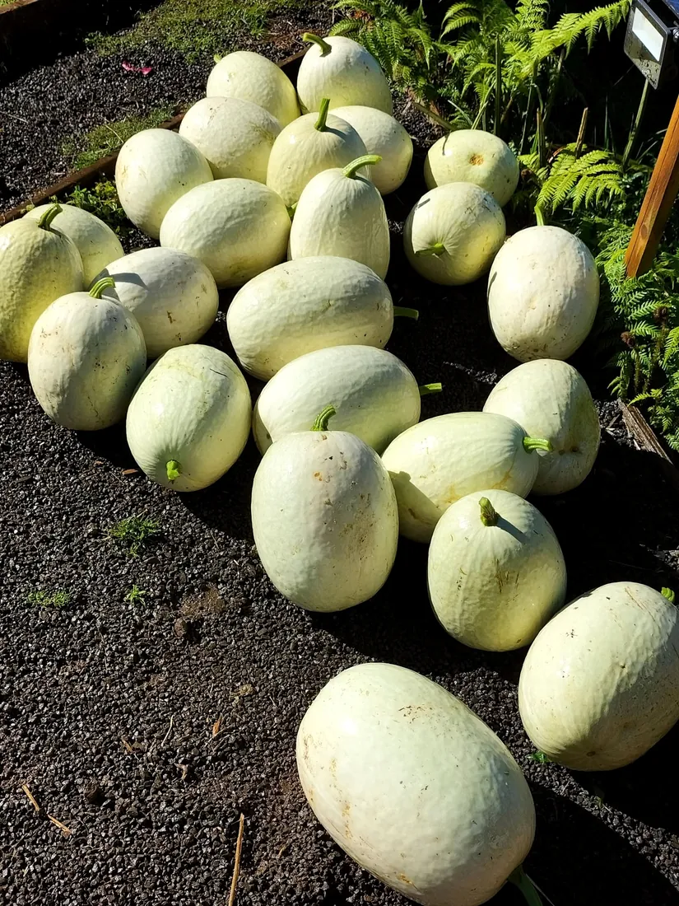
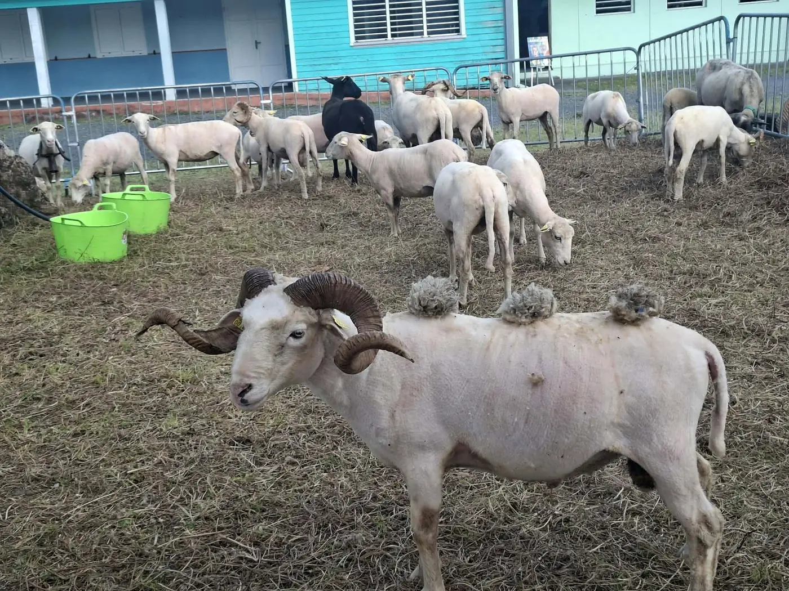
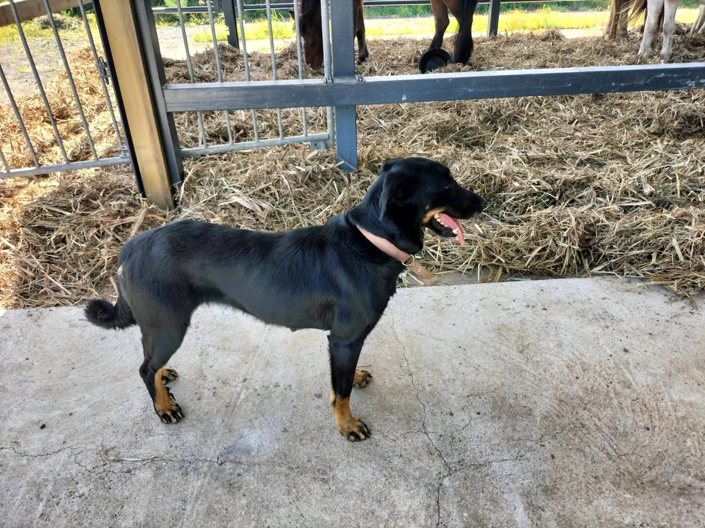
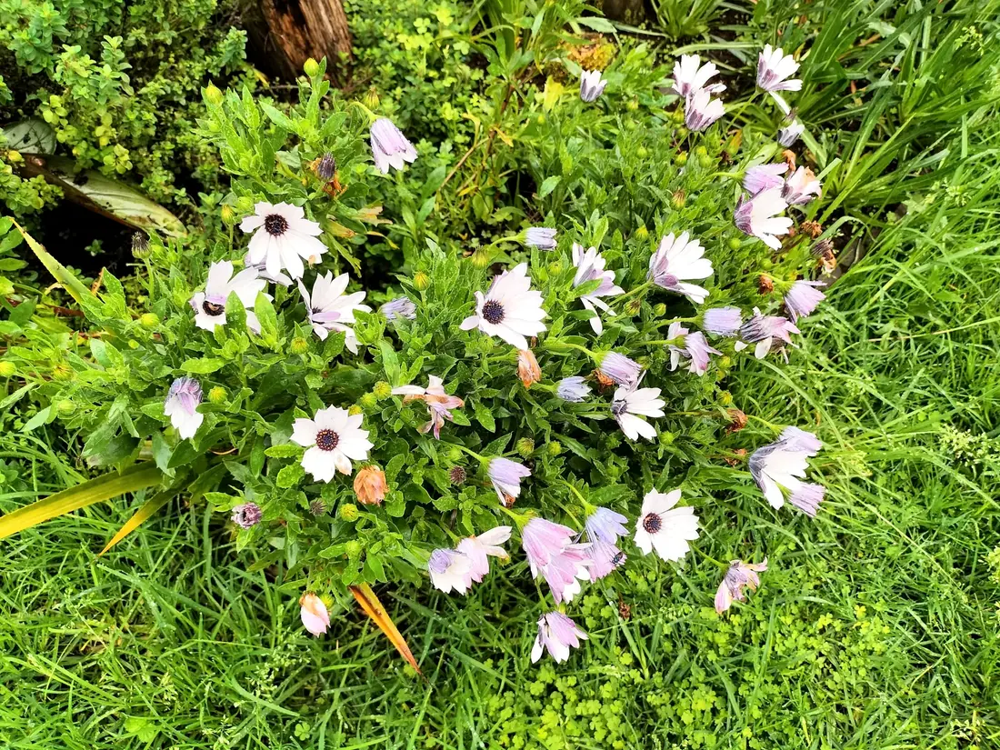
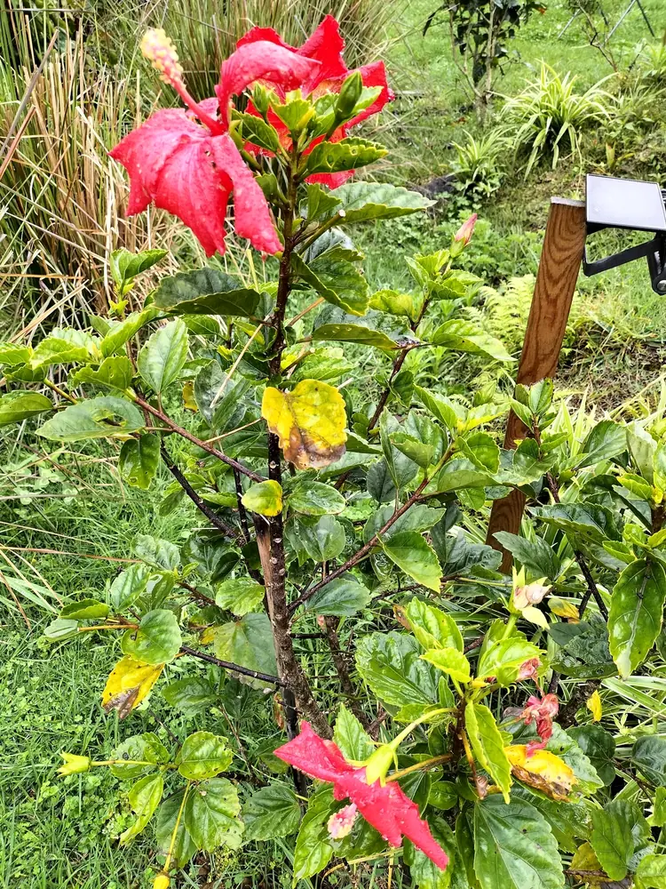
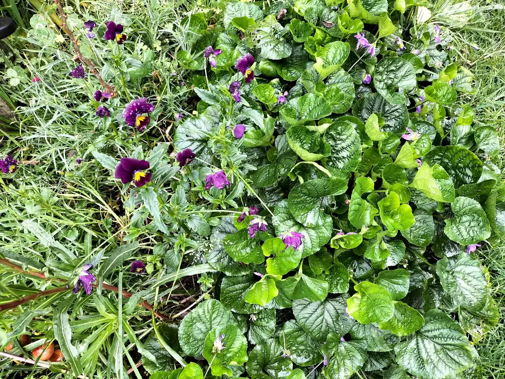

Tao
Montagne des Pyrénées, chien de protection : il accompagne le troupeau.
Grand Coude · Saint-Joseph · La Réunion
Quand le berger rencontre son étoile alors tout devient possible
Le troupeau, les chiens du berger et le jardin Lacour, dans les hauts de Saint-Joseph.


Le jardin Lacour
Au jardin Lacour, les légumes poussent sur la bonne terre noire des hauts de Saint-Joseph. Voici ce que le jardin vous propose :

Le troupeau du berger
« Tounu toubo et ponpouné qui fé lé joli »Publication de L'arche des songes, octobre 2026
Des brebis blanches, une brebis noire, et ce bélier qui porte fièrement ses trois pompons de laine : à L'arche des songes, le troupeau a de l'allure.

Montagne des Pyrénées, chien de protection : il accompagne le troupeau.

Chienne de guide, fidèle compagne du berger.
Le jardin en fleurs
Entre deux récoltes, le jardin se couvre de couleurs : marguerites du Cap, hibiscus rouge, violettes et pensées.



Faites glisser pour voir la suite →
Les rendez-vous
Le marché du jardin Lacour, à Grand Coude : un rendez-vous qui rassemble déjà beaucoup de monde sur la page Facebook.
Un déjeuner en chansons, annoncé sur la page de L'arche des songes. Les détails sont sur Facebook.
« L'arche des songes… Un lieu inspirant rempli d'amour. »Un avis laissé sur la page Facebook de L'arche des songes
Pour les fêtes
Pour les repas de fin d'année, réservez votre panier du jardin Lacour : les légumes de Grand Coude, prêts à mettre sur la table ou à offrir.
Selon les récoltes du moment, sur réservation.
Venir & réserver
Un appel, et le jardin vous prépare votre panier.